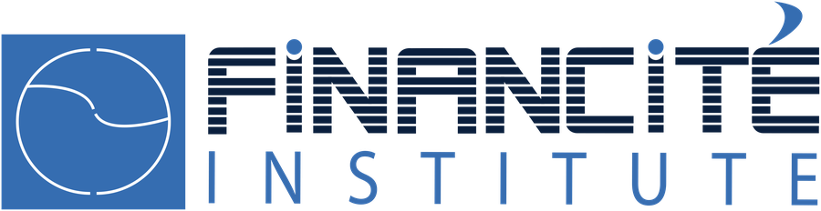

0
chargés d'affaires
0
entreprises repérées
0
prospects retenus
Retour sur un parcours.
Programme certifiant · Promotion 2026
GRE · CCE
Gestionnaires de relations entreprises et chargés de clientèle entreprises d'Attijariwafa bank

Le parcours
Du savoir au terrain, en trois blocs
1
Se former
Cours en ligne, workshops, évaluations
2
Originer
Repérer, faire valider, documenter ses cibles
3
Pitcher
Le bootcamp des 19 et 20 novembre
→
Le jury
Puis le terrain
Bloc 1 · Se former
Bloc 1
Comprendre, décider, conseiller
Former des banquiers d'entreprise qui transforment leurs connaissances en gestes professionnels.
01
Lire l'entreprise
02
Décider en matière de crédit
03
Structurer les financements
04
Développer la relation dans la durée
Cours en ligne
Workshops sur dossiers réels
Évaluations exigeantes
Puis un exercice grandeur nature : l'origination.
Bloc 2 · Originer
Étape 1 · Repérer
10 à 15 entreprises du territoire,
notées sur 20
notées sur 20
Déclencheur/5
Potentiel/4
Accessibilité/4
Adéquation à l'offre/4
Risque/3
Seuil conseillé : 13/20 · Informations publiques uniquement · Aucun contact avec l'entreprise
0
entreprises repérées et notées
Bloc 2 · Originer
Étape 2 · Faire valider
Le manager dans la boucle,
dès le départ
dès le départ
7 meilleures cibles présentées
→
5 retenues par le manager
0cibles présentées aux managers
Bloc 2 · Originer
Étape 3 · Documenter
Une fiche prospect par cible
Business model
Déclencheur daté et sourcé
Hypothèse de besoin
Angle d'approche
Porte d'entrée
Trois objections et leurs réponses
Réponse globale de la banque
0fiches prospect
Présent dans les fiches
Angle d'approche100 %
Porte d'entrée100 %
Réponse globale de la banque100 %
Objections avec réponse98 %
Déclencheur sourcé93 %
L'approche commerciale est acquise.
Bloc 2 · Originer
Le portefeuille construit
De 424 entreprises à 72 prospects
Entreprises repérées et notées
424
Cibles présentées aux managers
210
Cibles étudiées
161
Fiches prospect rédigées
145
Prospects retenus pour la soutenance
72
30 participants sur 30 ont remis leurs travaux. Une vraie sélection : 5,9 entreprises repérées pour un prospect retenu.
Bloc 2 · Originer
Un vivier réel
Ancré dans l'économie productive
161 cibles · 16 secteurs · 8 régions
BTP et génie civil27
Agroalimentaire20
Plasturgie, emballage17
Distribution, négoce15
Métallurgie, matériaux14
Chimie, pharmacie, santé11
0de PME non clientes, qui décident de leur banque au Maroc
0tournées vers l'international
0des prospects retenus reposent sur un événement propre à l'entreprise
Bloc 2 · Originer
Des opportunités concrètes
Un événement précis, une réponse adaptée
850 MDH
Un complexe hôtelier en construction
Crédit à moyen terme, crédit relais, cautions, crédit documentaire
220 MDH
L'extension d'une usine agroalimentaire
Crédit d'investissement, lignes de fonctionnement, crédits documentaires
200 MDH
Une usine de câbles inaugurée, 165 emplois
Refinancement, crédit-bail, crédit documentaire, affacturage
Investissements
Marchés publics
Nouveaux actionnaires
Contrats à l'export
Bloc 3 · Pitcher
Bloc 3 · Bootcamp · 19 et 20 novembre
Du dossier au pitch qui convainc
1
Le secteur avant la banque
Comprendre le secteur avant de pitcher l'entreprise.
2
Le pourquoi avant le quoi
Pourquoi elle, pourquoi maintenant, pourquoi nous.
3
Apprendre entre pairs
Travailler par secteur, enrichir les dossiers.
4
L'épreuve du réel
Confronter ses approches aux métiers de la banque.
Bloc 3 · Pitcher
Deux journées, quatre temps forts
Revoir, classer, affiner, pitcher
Jour 1 · Matin
Revue et classificationChaque portefeuille revu et classé par secteur
Jour 1 · Après-midi
Tables rondes sectoriellesHuit angles d'affinement, méthode du pitch, premières simulations
Jour 2 · Matin
Échange avec les métiersRegards croisés, panel de questions, pitchs devant les métiers
Jour 2 · Après-midi
Clôture et finalisationRecommandations et feuille de route individuelle
Bloc 3 · Pitcher
La méthode
Un pitch en sept temps
1L'accroche
2L'entreprise et son secteur
3Le déclencheur
4Les besoins
5La proposition
6L'approche
7Ce que la banque y gagne
Pourquoi elle. Pourquoi maintenant. Pourquoi nous.
Trois réponses, un pitch.
Les résultats
Une promotion prête pour le jury
La suite
Le portefeuille→Le pitch→Le jury→La relation
Soutenance devant le jury, puis prise de contact avec chaque prospect, accompagnée par le manager.
Merci à toute la promotion.